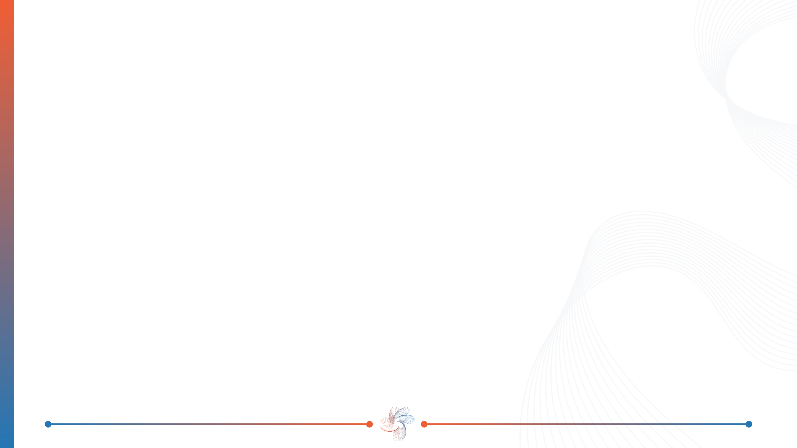

Bài trình bày này giới thiệu bài báo "Mining High Utility Itemsets without Candidate Generation" của Mengchi Liu và Junfeng Qu, công bố tại hội nghị CIKM năm 2012. Bài báo đề xuất thuật toán HUI-Miner, dùng để tìm các tập mục có độ hữu ích cao trong cơ sở dữ liệu giao dịch mà không cần bước phát sinh ứng viên.
Tập phổ biến, tập hữu ích cao, đề xuất UL
ĐN1–ĐN7, Tính chất 1
ĐN8–ĐN10, xây dựng 1-UL, 2-UL, k-UL
Tính chất 2, thuật toán, minh họa
So sánh kết quả và đánh giá
Bài trình bày gồm năm phần. Phần một giới thiệu bài toán, cách làm của các thuật toán trước và ý tưởng chính của HUI-Miner. Phần hai nêu một số định nghĩa cần thiết. Phần ba trình bày cấu trúc Utility List. Phần bốn trình bày thuật toán HUI-Miner và chạy thử từng bước trên một cơ sở dữ liệu nhỏ lấy từ bài báo, với ngưỡng minutil bằng 30. Phần năm trình bày kết quả thực nghiệm và một số nhận xét đánh giá.
Khai phá tập phổ biến
Đếm số giao dịch chứa tập mục. Với n mục có 2ⁿ − 1 tập cần xét. Ví dụ: Apriori, FP-Growth.
Khai phá tập hữu ích cao
Tính số lượng × lợi nhuận. Tìm mọi tập mục có độ hữu ích ≥ minutil.
| Tập mục | Độ hỗ trợ | Độ hữu ích |
|---|---|---|
| {b, c} | 3 | 18 |
| {d, e} | 2 | 22 |
Xuất hiện nhiều hơn chưa chắc có độ hữu ích cao hơn.
Bài toán quen thuộc trong khai phá dữ liệu là tìm tập phổ biến, tức các nhóm mặt hàng thường được mua cùng nhau. Với n mặt hàng có tới 2 mũ n trừ 1 tập mục cần xét, nên các thuật toán như Apriori hay FP-Growth tìm cách thu hẹp không gian này. Cách đếm tần suất chỉ ghi nhận một mặt hàng có xuất hiện trong giao dịch hay không. Nó không phân biệt khách mua một hay ba đơn vị, cũng không phân biệt mặt hàng có lợi nhuận cao hay thấp.
Khai phá tập hữu ích cao bổ sung hai thông tin này: số lượng mua và lợi nhuận đơn vị. Mục tiêu là tìm mọi tập mục có tổng độ hữu ích không nhỏ hơn một ngưỡng cho trước, gọi là minutil.
Ví dụ trong bài báo: tập {b, c} xuất hiện trong ba giao dịch, có độ hữu ích 18.
Tập {d, e} chỉ xuất hiện trong hai giao dịch nhưng có độ hữu ích 22.
Như vậy hai thước đo có thể cho thứ hạng khác nhau. Tập xuất hiện nhiều hơn chưa chắc có độ hữu ích cao hơn.
Các giao dịch
Giữ các tập có cận trên ≥ minutil
Quét lại dữ liệu, tính độ hữu ích thật
Các tập đạt ngưỡng
| chain, minutil 0,007% | Ứng viên | HUI |
|---|---|---|
| IHUP-TWU | 558.254 | 6.920 |
| UP-Growth | 48.198 | 6.920 |
| UP-Growth+ | 33.966 | 6.920 |
Hai vấn đề
Bộ nhớ để lưu ứng viên
Thời gian để kiểm tra ứng viên
Để giải bài toán này, trước HUI-Miner, các thuật toán như Two-Phase, IHUP, UP-Growth thường làm theo hai pha, bắt đầu từ cơ sở dữ liệu giao dịch.
Pha một ước lượng một giá trị lớn hơn hoặc bằng độ hữu ích thật, gọi là cận trên, rồi giữ lại các tập có cận trên đạt ngưỡng. Những tập này là ứng viên.
Pha hai quét lại cơ sở dữ liệu để tính độ hữu ích chính xác của từng ứng viên, rồi giữ lại các ứng viên đạt ngưỡng.
Bảng này lấy từ bài báo, trên bộ dữ liệu chain. IHUP-TWU phát sinh hơn 558 nghìn ứng viên, trong khi số tập hữu ích cao thực tế là 6.920. UP-Growth+ giảm số ứng viên xuống khoảng 34 nghìn, vẫn lớn hơn khoảng năm lần so với kết quả cần tìm.
Cách làm này gặp hai vấn đề: cần bộ nhớ để lưu ứng viên, và cần thời gian để phát sinh rồi kiểm tra chúng.
Lưu trữ
Độ hữu ích chính xác của tập mục
Xác định
Tập mục có được tỉa hay không
Quét 2 lần
Một danh sách cho mỗi mục
Kết hợp danh sách, duyệt theo chiều sâu
Bài báo đề xuất một cấu trúc dữ liệu gọi là Utility List, viết tắt là UL. Mỗi tập mục có một danh sách. Danh sách này lưu trữ độ hữu ích chính xác của tập mục.
Đồng thời, danh sách cho biết tập mục đó có được tỉa hay không, tức có cần xét tiếp các tập lớn hơn chứa nó hay không.
Quy trình gồm ba bước. Bước một: quét cơ sở dữ liệu giao dịch hai lần.
Bước hai: xây dựng utility-list cho từng mục.
Bước ba: thuật toán HUI-Miner kết hợp các danh sách và duyệt theo chiều sâu để tìm tập hữu ích cao. Từ bước này không cần quét lại cơ sở dữ liệu và không cần lưu tập ứng viên.
| Tid | Mặt hàng × số lượng | tu(T) |
|---|---|---|
| T1 | b×1 c×2 d×1 g×1 | 10 |
| T2 | a×4 b×1 c×3 d×1 e×1 | 18 |
| T3 | a×4 c×2 d×1 | 11 |
| T4 | c×2 e×1 f×1 | 9 |
| T5 | a×5 b×2 d×1 e×2 | 22 |
| T6 | a×3 b×4 c×1 f×2 | 18 |
| T7 | d×1 g×5 | 10 |
Lợi nhuận đơn vị
| a | b | c | d | e | f | g |
|---|---|---|---|---|---|---|
| 1 | 2 | 1 | 5 | 4 | 3 | 1 |
Tổng 7 giao dịch: 98
Ngưỡng trong ví dụ:
minutil = 30
T2 có e×1, không phải e×2.
Đây là cơ sở dữ liệu ví dụ, lấy từ Hình 1 của bài báo. Bảng bên phải là lợi nhuận đơn vị của bảy mặt hàng. Bảng bên trái là bảy giao dịch, mỗi mặt hàng đi kèm số lượng mua.
Cột cuối là tổng độ hữu ích của từng giao dịch. Với T1: b một đơn vị nhân 2, c hai đơn vị nhân 1, d một đơn vị nhân 5, g một đơn vị nhân 1. Tổng là 10.
Làm tương tự cho các giao dịch còn lại. Cộng cả bảy giao dịch được 98.
Trong phần còn lại, ngưỡng minutil được đặt bằng 30. Câu hỏi là: những tập mục nào có tổng độ hữu ích từ 30 trở lên? Lưu ý: trong T2, mặt hàng e có số lượng là 1. Một số tài liệu giảng dạy ghi nhầm thành 2, làm các kết quả phía sau bị sai.
| Công thức | Ý nghĩa | Ví dụ | |
|---|---|---|---|
| ĐN1 | eu(i) | Lợi nhuận đơn vị | eu(e) = 4 |
| ĐN2 | iu(i, T) | Số lượng mua | iu(e, T5) = 2 |
| ĐN3 | u(i, T) = iu(i, T) × eu(i) | Của mục i trong T | u(e, T5) = 2 × 4 = 8 |
| ĐN4 | u(X, T) = Σ u(i, T) | Của tập X trong T | u({a,e}, T2) = 4 + 4 = 8 |
| ĐN5 | u(X) = Σ u(X, T) | Của tập X | u({a,e}) = 8 + 13 = 21 |
| ĐN6 | tu(T) = Σ u(i, T) | Của giao dịch T | tu(T1) = 10 |
X là HUI khi u(X) ≥ minutil. Ví dụ: u({a,e}) = 21 < 30 nên không phải HUI.
Bài báo đưa ra sáu định nghĩa, có thể tóm lại thành một phép tính: lấy số lượng nhân lợi nhuận đơn vị, rồi cộng dồn. Ký hiệu eu là lợi nhuận đơn vị. Ví dụ eu của e bằng 4.
Ký hiệu iu là số lượng của một mục trong một giao dịch. Trong T5, e được mua 2 đơn vị.
Nhân hai giá trị này được độ hữu ích của một mục trong một giao dịch: e trong T5 bằng 2 nhân 4, tức 8.
Với một tập mục, cộng độ hữu ích của các mục thuộc tập đó trong cùng giao dịch. Tập {a, e} trong T2 bằng 4 cộng 4, tức 8.
Sau đó cộng trên mọi giao dịch chứa tập mục. {a, e} có mặt trong T2 và T5, nên độ hữu ích là 8 cộng 13, bằng 21.
Ký hiệu tu là tổng độ hữu ích của cả giao dịch, ví dụ tu của T1 bằng 10.
Một tập mục là tập hữu ích cao khi độ hữu ích của nó không nhỏ hơn minutil. {a, e} bằng 21, nhỏ hơn 30, nên không phải tập hữu ích cao.
{a}
hỗ trợ 4
{a,b}
hỗ trợ 3
{a,b,c}
hỗ trợ 2
{a,b,c,d}
hỗ trợ 1
Độ hỗ trợ: 4 → 3 → 2 → 1
Độ hữu ích: 16 → 26 → 21 → 14
{a} không đạt
{a,b} đạt {a,b,c} đạt
Không thể bỏ nhánh chỉ vì tập hiện tại chưa đạt ngưỡng.
Đây là điểm khó chính của bài toán. Bắt đầu với tập {a}: độ hữu ích 16, độ hỗ trợ 4.
Thêm b được {a, b}: độ hữu ích tăng lên 26.
Thêm c được {a, b, c}: độ hữu ích giảm còn 21.
Thêm d được {a, b, c, d}: còn 14. Độ hỗ trợ luôn giảm khi thêm mục, nhưng độ hữu ích thì lúc tăng lúc giảm.
Với ngưỡng minh họa 20 trong bài báo: {a} không đạt, nhưng {a, b} và {a, b, c} lại đạt.
Với tập phổ biến, nếu một tập không đạt thì mọi tập chứa nó cũng không đạt, nên có thể bỏ cả nhánh. Đây là nguyên tắc của Apriori. Với độ hữu ích, nguyên tắc này không đúng, nên cần một tiêu chí khác để xác định khi nào được phép bỏ qua một nhánh.
Nếu twu(X) < minutil thì X và mọi tập chứa X đều không phải HUI.
| Mục | a | b | c | d | e | f | g |
|---|---|---|---|---|---|---|---|
| TWU | 69 | 68 | 66 | 71 | 49 | 27 | 20 |
| minutil = 30 | giữ | giữ | giữ | giữ | giữ | loại | loại |
Một cận trên được dùng phổ biến là TWU: tổng độ hữu ích của tất cả giao dịch chứa tập mục. Tính chất 1 nói rằng nếu TWU nhỏ hơn ngưỡng thì tập đó và mọi tập chứa nó đều không phải tập hữu ích cao.
Ví dụ, f có mặt trong T4 và T6, nên TWU của f bằng 9 cộng 18, tức 27.
Bảng này là TWU của cả bảy mục. Ghi chú: Hình 3 của bài báo ghi TWU của g là 10; giá trị đúng là 20. Sai lệch này không làm thay đổi kết quả.
Với minutil bằng 30, f có TWU 27 và g có TWU 20, đều nhỏ hơn 30, nên bị loại ngay từ đầu.
Năm mục còn lại được sắp xếp theo TWU tăng dần: e, c, b, a, d. Thứ tự này được giữ cố định trong suốt thuật toán và có vai trò quan trọng ở các slide sau. HUI-Miner cũng dùng TWU, nhưng chỉ ở bước lọc ban đầu này.
| Tid | Giao dịch gốc |
|---|---|
| T1 | b1 c2 d1 g1 |
| T2 | a4 b1 c3 d1 e1 |
| T3 | a4 c2 d1 |
| T4 | c2 e1 f1 |
| T5 | a5 b2 d1 e2 |
| T6 | a3 b4 c1 f2 |
| T7 | d1 g5 |
→
| Tid | Đã chỉnh sửa (độ hữu ích) | tu |
|---|---|---|
| T1 | c2 b2 d5 | 9 |
| T2 | e4 c3 b2 a4 d5 | 18 |
| T3 | c2 a4 d5 | 11 |
| T4 | e4 c2 | 6 |
| T5 | e8 b4 a5 d5 | 22 |
| T6 | c1 b8 a3 | 12 |
| T7 | d5 | 5 |
Định nghĩa 8: một giao dịch được gọi là giao dịch đã chỉnh sửa nếu thỏa hai điều kiện. Thứ nhất, loại bỏ các mục có TWU nhỏ hơn minutil. Thứ hai, các mục còn lại được sắp xếp tăng dần theo TWU, ở đây là e, c, b, a, d. Bên trái là các giao dịch gốc, số đi kèm là số lượng.
Với minutil bằng 30, hai mục f và g bị loại khỏi mọi giao dịch.
Bên phải là các giao dịch sau khi chỉnh sửa. Các mục được sắp theo thứ tự mới, và số đi kèm bây giờ là độ hữu ích, tức số lượng nhân lợi nhuận. Cột cuối là tổng độ hữu ích của giao dịch sau khi chỉnh sửa.
Ví dụ T2 sau khi chỉnh sửa là e 4, c 3, b 2, a 4, d 5. Giao dịch này sẽ được dùng ở slide tiếp theo.
đứng trước,
không tính
iutil = 3
rutil = 2 + 4 + 5 = 11
ĐN9: T/X
Các mục đứng sau X trong T
T2/{e,b} = {a,d} · T2/{c} = {b,a,d}
ĐN10: độ hữu ích còn lại
ru({e,b}, T2) = 4 + 5 = 9
Mỗi phần tử của UL là bộ ba ⟨tid, iutil, rutil⟩. Với {c} tại T2: ⟨2, 3, 11⟩
Xét giao dịch T2 đã chỉnh sửa: e 4, c 3, b 2, a 4, d 5, và tập X là {c}.
Giá trị thứ nhất là iutil: độ hữu ích của X trong giao dịch. Độ hữu ích của c trong T2 là 3.
Giá trị thứ hai là rutil: tổng độ hữu ích của các mục đứng sau X. Sau c là b, a, d, có tổng 2 cộng 4 cộng 5 bằng 11. Mục e đứng trước c nên không được tính.
Định nghĩa 9 gọi tập các mục đứng sau X trong T là T chia X. Ví dụ, T2 chia {e, b} là {a, d}, và T2 chia {c} là {b, a, d}.
Định nghĩa 10: độ hữu ích còn lại của X trong T là tổng độ hữu ích của các mục thuộc T chia X. Ví dụ, ru của {e, b} trong T2 bằng u của a cộng u của d, tức 4 cộng 5 bằng 9.
Mỗi phần tử trong utility-list gồm ba giá trị: mã giao dịch, iutil và rutil. Với {c} tại T2, phần tử là 2, 3, 11. Rutil là thông tin mới mà bài báo đưa vào: nó cho biết tối đa còn có thể thu thêm bao nhiêu nếu mở rộng tập mục.
| Tid | Giao dịch |
|---|---|
| T1 | c2 b2 d5 |
| T2 | e4 c3 b2 a4 d5 |
| T3 | c2 a4 d5 |
| T4 | e4 c2 |
| T5 | e8 b4 a5 d5 |
| T6 | c1 b8 a3 |
| T7 | d5 |
Mỗi phần tử: ⟨tid, iutil, rutil⟩. Ban đầu năm danh sách đều rỗng.
T1: c ⟨1, 2, 2+5 = 7⟩ · b ⟨1, 2, 5⟩ · d ⟨1, 5, 0⟩
T2: e ⟨2, 4, 3+2+4+5 = 14⟩ · c ⟨2,3,11⟩ · b ⟨2,2,9⟩ · a ⟨2,4,5⟩ · d ⟨2,5,0⟩
T3: c ⟨3, 2, 4+5 = 9⟩ · a ⟨3, 4, 5⟩ · d ⟨3, 5, 0⟩
T4: e ⟨4, 4, 2⟩ · c ⟨4, 2, 0⟩
T5: e ⟨5, 8, 4+5+5 = 14⟩ · b ⟨5, 4, 10⟩ · a ⟨5, 5, 5⟩ · d ⟨5, 5, 0⟩
T6: c ⟨6, 1, 8+3 = 11⟩ · b ⟨6, 8, 3⟩ · a ⟨6, 3, 0⟩
T7: d ⟨7, 5, 0⟩
Đã đủ năm danh sách. Từ đây không cần đọc lại dữ liệu.
Trong lần quét thứ hai, thuật toán tạo utility-list cho từng mục đơn. Cách làm là đọc từng giao dịch đã chỉnh sửa từ trái sang phải. Ban đầu năm danh sách đều rỗng.
T1 gồm c 2, b 2, d 5. Mục c có iutil 2, các mục phía sau có tổng 7, nên c nhận phần tử 1, 2, 7. Mục b có iutil 2, phía sau còn d bằng 5. Mục d đứng cuối nên rutil bằng 0.
T2 có đủ năm mục. Mục e đứng đầu nên rutil của e là tổng bốn mục còn lại, bằng 14.
T3 gồm c, a, d. Ba danh sách tương ứng nhận thêm một phần tử.
T4 gồm e và c.
T5 gồm e, b, a, d. Mục e có iutil 8 và rutil 14.
T6 gồm c, b, a.
T7 chỉ còn d.
Sau lần quét này đã có đủ năm danh sách. Từ đây trở đi thuật toán không cần đọc lại cơ sở dữ liệu. Mọi tính toán tiếp theo dựa trên năm danh sách này.
→
Tìm tid có ở cả hai danh sách.
tid chung: T2 và T4
T2: iutil = 4 + 3 = 7
rutil = rutil của c = 11
T4: iutil = 4 + 2 = 6
rutil = rutil của c = 0
Giữ tid chung · cộng hai iutil · lấy rutil của mục đứng sau
Tương tự: UL({e,b}) = ⟨2,6,9⟩ ⟨5,12,10⟩ · UL({e,a}) = ⟨2,8,5⟩ ⟨5,13,5⟩
Để tạo utility-list cho tập hai mục, thuật toán kết hợp hai danh sách của mục đơn. Lấy ví dụ tập {e, c}.
Bước một: tìm các giao dịch có mặt ở cả hai danh sách. Danh sách của e có T2, T4, T5. Danh sách của c có T1, T2, T3, T4, T6. Phần chung là T2 và T4. Vì các tid đã được sắp xếp, việc so sánh chỉ cần duyệt mỗi danh sách một lần.
Tại T2: iutil bằng 4 cộng 3 là 7. Rutil lấy theo mục đứng sau, tức c, bằng 11.
Tại T4: iutil bằng 4 cộng 2 là 6, rutil bằng 0.
Tóm lại: chỉ giữ tid chung, cộng hai iutil, lấy rutil của mục đứng sau, và không đọc lại cơ sở dữ liệu.
Làm tương tự ta có danh sách của {e, b} và {e, a}. Hai danh sách này được dùng ở slide tiếp theo.
sai e bị cộng hai lần
| T2 | T5 | |
|---|---|---|
| Cộng trực tiếp | 6 + 8 = 14 | 12 + 13 = 25 |
| Tính lại từ giao dịch | 4 + 2 + 4 = 10 | 8 + 4 + 5 = 17 |
| Trừ phần của {e} | 6 + 8 − 4 = 10 | 12 + 13 − 8 = 17 |
UL({e,b,a}) = ⟨2,10,5⟩ ⟨5,17,5⟩
Với tập từ ba mục trở lên, thuật toán kết hợp hai danh sách có chung tiền tố. Để có {e, b, a}, ta kết hợp danh sách của {e, b} và {e, a}. Cả hai đều bắt đầu bằng e.
Nếu cộng trực tiếp như với tập hai mục, tại T2 được 6 cộng 8 bằng 14, tại T5 được 25.
Tính lại từ giao dịch: trong T2, e bằng 4, b bằng 2, a bằng 4, tổng đúng là 10. Trong T5 tổng đúng là 17. Chênh lệch chính là độ hữu ích của e, vì e nằm trong cả hai danh sách nên bị cộng hai lần.
Bài báo sửa bằng cách trừ đi độ hữu ích của tiền tố chung, lấy từ danh sách của {e}. Tại T2: 6 cộng 8 trừ 4 bằng 10. Tại T5: 12 cộng 13 trừ 8 bằng 17. Khớp với cách tính trực tiếp.
Công thức tổng quát: u của Pxy bằng u của Px cộng u của Py trừ u của P. Đây là nội dung của Thuật toán 1 trong bài báo, có tên Construct.
Construct(P.UL, Px.UL, Py.UL): for each Ex ∈ Px.UL: if ∃ Ey ∈ Py.UL có Ey.tid = Ex.tid: if P.UL ≠ ∅: tìm E ∈ P.UL có E.tid = Ex.tid Exy ← ⟨Ex.tid, Ex.iutil + Ey.iutil − E.iutil, Ey.rutil⟩ else: Exy ← ⟨Ex.tid, Ex.iutil + Ey.iutil, Ey.rutil⟩ thêm Exy vào Pxy.UL return Pxy.UL
Đầu vào: danh sách của tiền tố P và của hai tập Px, Py.
Chỉ xét các tid có ở cả hai danh sách.
Tập 2 mục (P rỗng): cộng hai iutil, ví dụ {e,c}.
Tập từ 3 mục: trừ iutil của P, ví dụ {e,b,a}.
rutil luôn lấy theo Py, mục đứng sau.
Thuật toán 1 trong bài báo, tên là Construct, tóm tắt hai slide vừa rồi. Đầu vào gồm danh sách của tiền tố P và danh sách của hai tập Px, Py.
Với mỗi phần tử của Px, thuật toán tìm phần tử của Py có cùng mã giao dịch. Chỉ các giao dịch có ở cả hai danh sách mới được giữ lại.
Nếu P rỗng, tức đang tạo tập hai mục, iutil mới bằng tổng hai iutil. Đây là trường hợp của {e, c}.
Nếu P không rỗng, tức đang tạo tập từ ba mục, thuật toán trừ thêm iutil của P để không cộng tiền tố hai lần. Đây là trường hợp của {e, b, a}.
Trong cả hai trường hợp, rutil lấy theo Py, vì Py chứa mục đứng sau. Phần tử mới được thêm vào danh sách kết quả.
Nếu Σ iutil + Σ rutil < minutil thì X và mọi mở rộng của X không phải HUI.
Mở rộng của X chỉ thêm các mục đứng sau X, nên phần thêm vào không vượt quá rutil.
UL({e,c}) = ⟨2,7,11⟩ ⟨4,6,0⟩: 7 + 11 + 6 + 0 = 24 < 30
Bỏ qua {e,c} và 7 mở rộng, không cần tạo danh sách cho chúng.
Tính chất 2, là Lemma 1 trong bài báo: nếu tổng iutil cộng tổng rutil trong danh sách của X nhỏ hơn minutil, thì X và mọi mở rộng của X đều không phải tập hữu ích cao. Hình bên dưới là cây liệt kê tập theo thứ tự e, c, b, a, d. Mỗi nút chỉ được mở rộng bằng các mục đứng sau nó, nên phần thêm vào trong mỗi giao dịch không vượt quá rutil. Bài báo có chứng minh hình thức cho tính chất này.
Ví dụ với {e, c}: danh sách là 2, 7, 11 và 4, 6, 0. Cộng tất cả iutil và rutil được 24, nhỏ hơn 30.
Như vậy có thể bỏ qua {e, c} cùng bảy mở rộng của nó trên cây, không cần tạo danh sách cho các tập này. So với TWU, cận này nhỏ hơn hoặc bằng, vì chỉ tính phần đứng sau thay vì toàn bộ giao dịch, nên tỉa được nhiều nhánh hơn.
HUI-Miner(P.UL, ULs, minutil): for each X ∈ ULs: if SUM(X.iutil) ≥ minutil: xuất X # HUI if SUM(X.iutil) + SUM(X.rutil) ≥ minutil: exULs ← ∅ for each Y đứng sau X trong ULs: exULs ← exULs + Construct(P.UL, X, Y) HUI-Miner(X, exULs, minutil) # Gọi lần đầu: HUI-Miner(∅, các 1-UL, minutil)
Xét lần lượt từng danh sách X theo thứ tự e ≺ c ≺ b ≺ a ≺ d.
HUI Σ iutil ≥ minutil: ghi nhận X.
Mở rộng nếu Σ iutil + Σ rutil ≥ minutil; ngược lại bỏ qua
Tạo danh sách của các mở rộng bằng Construct.
Gọi đệ quy với X làm tiền tố mới.
Hai điều kiện kiểm tra độc lập: tập không phải HUI vẫn có thể cần mở rộng.
Thuật toán 2 là toàn bộ HUI-Miner. Các danh sách được xét lần lượt theo thứ tự e, c, b, a, d.
Nếu tổng iutil của X đạt ngưỡng, X là tập hữu ích cao và được ghi nhận.
Nếu tổng iutil cộng rutil đạt ngưỡng, vẫn có khả năng tồn tại tập hữu ích cao trong nhánh này, nên X được mở rộng. Ngược lại, cả nhánh được bỏ qua theo Tính chất 2.
Khi mở rộng, thuật toán kết hợp X với từng danh sách đứng sau nó bằng Construct.
Sau đó gọi đệ quy với X làm tiền tố mới, trên tập danh sách vừa tạo.
Lần gọi đầu tiên dùng tiền tố rỗng và các danh sách của mục đơn. Lưu ý hai điều kiện được kiểm tra độc lập: một tập không phải HUI vẫn có thể cần mở rộng. Slide tiếp theo có một ví dụ cụ thể.
⟨2,4,14⟩ ⟨4,4,2⟩ ⟨5,8,14⟩
16 < 30: chưa là HUI.
46 ≥ 30: mở rộng.
⟨2,7,11⟩ ⟨4,6,0⟩
24 < 30.
bỏ qua cả nhánh
⟨2,6,9⟩ ⟨5,12,10⟩
37 ≥ 30: mở rộng thành eba, ebd.
⟨2,10,5⟩ ⟨5,17,5⟩
27 < 30: không phải HUI.
37 ≥ 30: vẫn mở rộng.
⟨2,15,0⟩ ⟨5,22,0⟩
37 ≥ 30.
tập hữu ích cao
⟨2,11,0⟩ ⟨5,17,0⟩
28 < 30.
bỏ qua
⟨2,8,5⟩ ⟨5,13,5⟩
31 ≥ 30: mở rộng thành ead.
⟨2,13,0⟩ ⟨5,18,0⟩
31 ≥ 30.
tập hữu ích cao
⟨2,9,0⟩ ⟨5,13,0⟩
22 < 30.
bỏ qua
{e,b,a,d} = 37
{e,a,d} = 31
Slide này chạy thuật toán trên nhánh bắt đầu từ e. Số bên trái trong mỗi nút là tổng iutil, số bên phải là tổng iutil cộng rutil. Tập {e} có tổng iutil 16, chưa phải HUI, nhưng giới hạn là 46, nên thuật toán xét tiếp bốn tập hai mục: ec, eb, ea, ed.
Tập {e, c} có giới hạn 24, nhỏ hơn 30, nên bị bỏ qua theo Tính chất 2.
Tập {e, b} có tổng iutil 18, giới hạn 37, nên được mở rộng thành eba và ebd.
Tập {e, b, a} là trường hợp đáng chú ý: độ hữu ích 27, chưa đạt ngưỡng, nhưng giới hạn vẫn là 37 nên thuật toán tiếp tục mở rộng.
Tập mở rộng {e, b, a, d} có độ hữu ích 37 và là tập hữu ích cao.
Quay lại nhánh eb, tập {e, b, d} có giới hạn 28, nhỏ hơn 30, nên bị bỏ qua.
Tập {e, a} có giới hạn 31, được mở rộng thành ead.
Tập {e, a, d} có độ hữu ích 31, là tập hữu ích cao.
Cuối cùng, tập {e, d} có giới hạn 22, bị bỏ qua.
Nhánh e cho hai tập hữu ích cao. Ví dụ này cũng cho thấy vì sao cần rutil: nếu dừng ở {e, b, a} vì chưa đạt ngưỡng, thuật toán sẽ bỏ sót {e, b, a, d}.
{e,b,a,d} = 37
T2: 15 · T5: 22
{e,a,d} = 31
T2: 13 · T5: 18
Các nhánh c, b, a, d không có tập hữu ích cao.
17
utility-list cho tập từ 2 mục
2
tập trong số đó là HUI
127
tập mục tính toàn bộ để đối chiếu: trùng khớp
Chạy hết các nhánh còn lại theo cùng cách, kết quả cuối cùng là hai tập hữu ích cao: {e, b, a, d} với độ hữu ích 37, và {e, a, d} với độ hữu ích 31.
Có thể kiểm tra trực tiếp: cả hai tập đều chỉ xuất hiện trong T2 và T5. {e, b, a, d} được 15 ở T2 và 22 ở T5. {e, a, d} được 13 ở T2 và 18 ở T5.
Các nhánh bắt đầu từ c, b, a và d không có tập hữu ích cao.
Trong quá trình chạy, thuật toán tạo 17 utility-list cho các tập từ hai mục trở lên, và 2 tập trong số đó là kết quả. Nghĩa là HUI-Miner không lưu ứng viên, nhưng vẫn tính toán cho một số tập không phải kết quả.
Kết quả được kiểm tra lại bằng cách tính toàn bộ 127 tập mục có thể có. Bài báo không nêu kết quả cuối của ví dụ này; các con số ở đây được tính lại từ dữ liệu của bài báo.
mushroom · 2% · thời gian
Thang log
retail · 0,02% · thời gian
Thang log
T10I4D100K · bộ nhớ
Không tốt hơn khi
T40I10D100K, ngưỡng 0,6%: chậm hơn UP-Growth+
accidents: tốn bộ nhớ hơn
Bài báo so sánh HUI-Miner với ba thuật toán: IHUP-TWU, UP-Growth và UP-Growth+, trên tám bộ dữ liệu gồm sáu bộ thực tế và hai bộ tổng hợp. Bảy trong tám bộ không có sẵn lợi nhuận và số lượng, nên tác giả sinh ngẫu nhiên hai giá trị này.
Trên mushroom với ngưỡng 2%, HUI-Miner chạy trong 35,8 giây, UP-Growth+ cần hơn 6.300 giây. Lưu ý biểu đồ thời gian dùng thang log.
Trên retail với ngưỡng 0,02%, HUI-Miner cần 22,2 giây, IHUP-TWU cần gần 9.760 giây.
Về bộ nhớ, trên T10I4D100K với ngưỡng 0,005%, HUI-Miner dùng khoảng 24 MB, so với 50 MB của UP-Growth+ và 109 MB của IHUP-TWU.
Bài báo cũng báo cáo hai trường hợp HUI-Miner không tốt hơn. Trên T40I10D100K với ngưỡng cao, UP-Growth+ chỉ phát sinh khoảng hai nghìn ứng viên và chạy nhanh hơn. Trên accidents, HUI-Miner dùng nhiều bộ nhớ hơn, và bài báo không giải thích nguyên nhân.
| Ưu điểm | Hạn chế |
|---|---|
| Quét dữ liệu 2 lần, không lưu ứng viên | Vẫn tạo danh sách cho nhiều tập không phải HUI |
| Cận iutil + rutil ≤ TWU, có chứng minh | Chỉ tỉa sau khi kết hợp danh sách |
| Thời gian, bộ nhớ thấp hơn ở đa số thí nghiệm | Không phân tích độ phức tạp |
| Cấu trúc đơn giản, dễ cài đặt | Chạy một lần, không công bố mã nguồn |
Sai sót nhỏ: twu(g) ở Hình 3 ghi 10, đúng là 20.
Phần này tổng hợp ưu điểm và hạn chế của bài báo.
HUI-Miner chỉ quét cơ sở dữ liệu hai lần và không cần lưu tập ứng viên. Tuy vậy, cụm từ "không phát sinh ứng viên" cần được hiểu là không lưu và không kiểm tra lại ứng viên: thuật toán vẫn tạo danh sách cho nhiều tập không phải kết quả, như ví dụ đã cho thấy với 17 danh sách và 2 HUI. Bài báo không báo cáo số lượng này trong thực nghiệm.
Cận dùng để tỉa nhỏ hơn hoặc bằng TWU và được chứng minh trong bài báo. Tuy nhiên việc tỉa chỉ diễn ra sau khi kết hợp danh sách.
Kết quả thực nghiệm cho thấy thời gian chạy và bộ nhớ thấp hơn ở phần lớn các thí nghiệm, nhưng bài báo không phân tích độ phức tạp.
Cấu trúc dữ liệu đơn giản nên dễ cài đặt. Về thực nghiệm, các kết quả chạy một lần trên dữ liệu có lợi nhuận sinh ngẫu nhiên, và mã nguồn không được công bố.
Ngoài ra có một số sai sót nhỏ về số liệu, ví dụ TWU của g ở Hình 3, và ngưỡng dừng ghi 10.000 giây ở mục 5.2 nhưng 100.000 giây ở mục 5.5. Các sai sót này không ảnh hưởng tới kết luận chính.
Thay cách làm hai pha bằng duyệt theo chiều sâu trên utility-list.
rutil cho phép bỏ qua nhánh an toàn, dù độ hữu ích không đơn điệu.
Thời gian và bộ nhớ thấp hơn trên phần lớn bộ dữ liệu.
Utility-list được nhiều thuật toán sau này kế thừa.
Cảm ơn. Mời đặt câu hỏi.
Phần cuối tóm tắt lại các nội dung chính.
HUI-Miner thay cách làm hai pha bằng việc duyệt theo chiều sâu trên utility-list.
Thông tin rutil cho phép xác định an toàn khi nào bỏ qua một nhánh, dù độ hữu ích không đơn điệu.
Thực nghiệm trong bài báo cho thấy thời gian và bộ nhớ thấp hơn các thuật toán cùng thời trên phần lớn bộ dữ liệu.
Cấu trúc utility-list sau đó được nhiều thuật toán khác kế thừa và cải tiến.
Phần trình bày đến đây là kết thúc. Xin cảm ơn, và mời đặt câu hỏi.